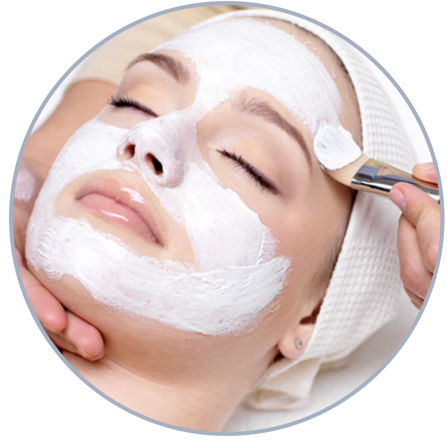
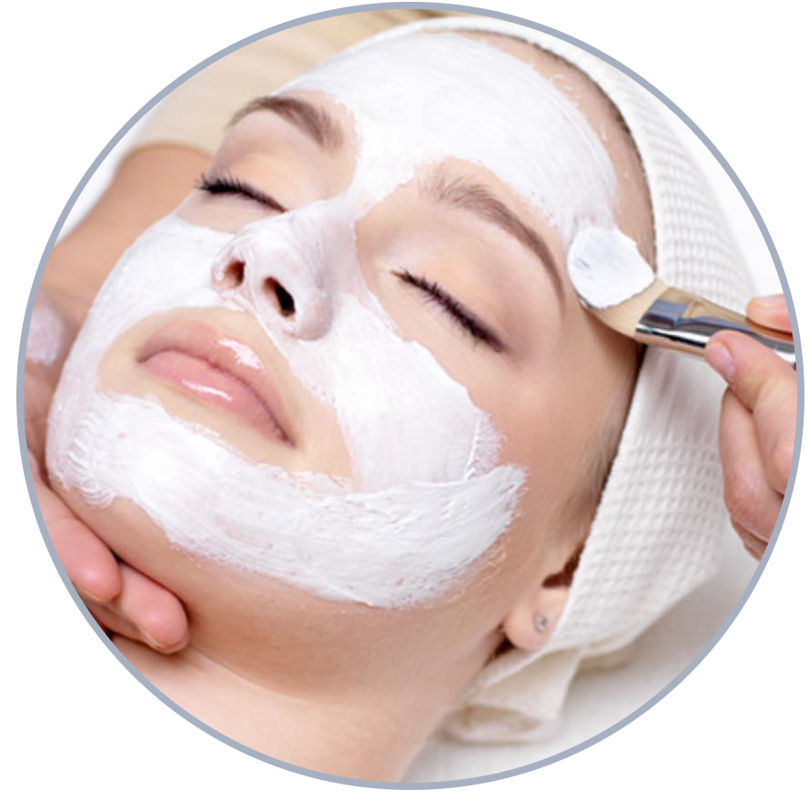

SKIN CARE
 

Orange Berry Facial
$ 100.00
Time Duration: 60 min
This limited edition treatment is suitable for all skin types. It uses a combination of enzymes & sugar cane that will gently exfoliate the skin revealing a beautiful glow, increase hydration and plump up fine lines. *Retinol exfoliating scrub $25: can be layered for improvement in signs of aging, break up clogged pores and even skin tone.
Request Reservation

Cherry Blossom Facial
$ 125.00
Time Duration: 90 min
This treatment includes a traditional Korean buff along with mineral salt. The mineral helps reduce inflammation and removes toxins that block the pores of the skin; while at the same time encourages circulation of blood. The abrasive friction between skin and salt helps with exfoliation and are better suited for people with dryer skin. Enjoy the full body salt scrub, watch your skin glow, and feel your muscles relax. Your full body treatment comes with a thorough facial cleansing, an application of a collagen facial mask, shampoo and conditioning.
Request Reservation
Acne Facial
$ 110.00
Time Duration: 60 min
This treatment is customized and the enzymes will change due to individual’s skin. This will have deep cleansing, enzyme exfoliation, light facial massage or pressure points, followed with a unique clay based Strawberry Spearmint mask that will absorb excess oil, draw out impurities, and refine the pores. This mask has antibacterial, antifungal properties and will draw out impurities and toxins. Appropriate skin care will follow.
Request Reservation
Diamond Microdermabrasion & Enzyme Facial
$ $160.00
Time Duration: 60 min
This is a wonderful combination. Using both enzyme exfoliation accompanied with diamond microdermabrasion will result in glowing skin with soft & smooth texture, refined pores, reduction of lines & wrinkles, and lightening of hyperpigmentation and acne scarring.
Request Reservation
Quick Pick Me UP
$ 60.00
Time Duration: 30 min
This 30 minute facial is great for when you need a little refresher. It consists of deep cleansing, enzyme exfoliation, followed by a nourishing mask to give your skin a boost. Extractions not included.
Request Reservation
Orange Blossom Facial
$ 100.00
Time Duration: 60 min
Orange blossoms in the spring fill the air with wonderful wafts of fragrance. This spring, as we enjoy the scents and the fruits, we can also enjoy the antioxidant benefits of Orange and Goji Berries on our skin. The Orange Zest enzyme contains 4% lactic and 1-1/2% glycolic to create progressive exfoliation, while the yogurt creaminess brings hydration and softness to our skin. Create a refreshing citrus and creamy anti-aging facial for your clients this spring.
Request Reservation
CHEMICAL PEELS
Cranberry Cream Acne Peel
$ 130.00
Time Dur: 60 min
Exfoliate and reduce oil with a 20% salicylic cranberry creamy peel. This aggressive mixture helps to resurface and refine skin and pores, remove oil and debris and protect from bacterial infections. For oily & acneic skin. Not suitable for all skin tones.
The Cranberry Cream Peel with Glycolic Boost ** not available for first time clients*
Request Reservation
Glycolic Peel
$ 75.00
Time Duration: 30 min
For best results this is sold in a series of 4 or 6, and service should be space one week apart. This peel is for those who are concerned with anti aging, pores, excess oil, congestion, and acne prone skin.
Request Reservation
Lactic Peel
$ 75.00
Time Duration: 30 min
This peel is for those who are concerned with hyperpigmentation, melasma, and dry/dehydrated skin.
Request Reservation
TCA Depigmentation Peel
$ 85.00
Time Duration: 30 min
For best results this is sold as an 8 week treatment. This consist of proper home care for one week prior to treatments, the next 3 weeks will consist of treatments one week apart. There will be minimal down time to minor flaking. Your skin will rest between weeks 5-7, following home care is a must. Week 8 will be a medium depth peel with some down time, this varies between individuals..
Request Reservation